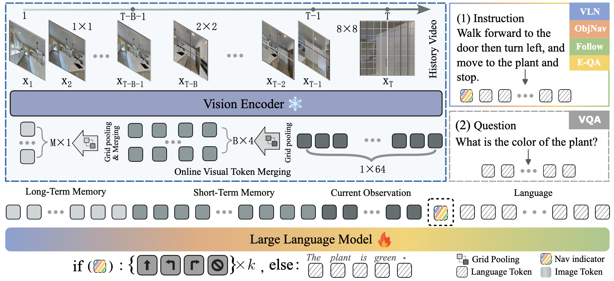

Method Overview
The overview of Uni-NaVid. Our method takes only single-view RGB frames { x1, · · ·, xT } and a natural language instruction as input. For each frame, we extract 64 visual tokens using the vision encoder and then use online token merging to accelerate the model while retaining compact visual information. The merged tokens and instruction tokens are sent to the large language model to obtain actions for navigation or answers for embodied question-answering.